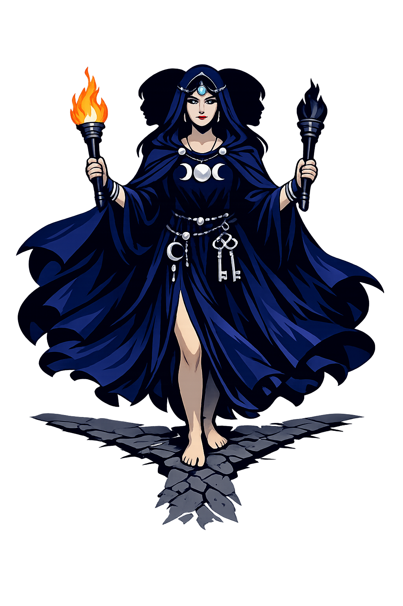

The Authentic Orthography
Magic, Crossroads, Moon · She who works from afar (from ἑκάς)

Why Hekátē.com is the correct form
Ἑκάτη
The name in its original Greek form. Hekátē (Ἑκάτη) is attested as magic, crossroads, moon — “She who works from afar (from ἑκάς)”. Its long vowels and acute accents carry the full phonetic and orthographic weight of the source tradition.
hekate
Reduced to plain hekate, the name loses everything that made it specific: long vowels and acute accents. What remains is an ASCII string that machines can parse but that no longer speaks with its original voice.
Hekátē
The Unicode restoration recovers what ASCII flattened. Hekátē restores long vowels and acute accents, returning the name to its original written dignity. The domain encodes to Punycode, but the browser displays the truth.
Hekátē.com → xn--hekt-7na51a.com
The non-ASCII characters in Hekátē are encoded while the ASCII remains visible. To the DNS, it is Punycode. To humanity, it is Hekátē.
How Hekátē is preserved in writing
A bespoke provenance study for Hekátē is being prepared by the PUNYCODEX scholarly team.
Contribute scholarly provenance →How Hekátē was spoken
Magic, Crossroads, Ghosts, and the Moon
Hekátē is the most liminal of the Greek gods. She stands at crossroads, doorways, and the boundary between living and dead. Unlike the Olympians who shine in public cult, she belongs to night, household ritual, and secret knowledge.
Crossroads (trioditis) are her sacred places; offerings were left at three-way intersections.
She carries torches to guide Persephonē from the underworld and to light nocturnal rites.
She rules phantoms and sends nightmares; her bark brings the dead.
Patron of pharmakeia and binding spells; Medea and Circe invoke her power.
Stories of Hekátē
Hekátē's mythology is small in scale but vast in implication. She is a Titan who keeps her power after the fall of the Titans, and she becomes Persephonē's companion in the underworld.
Hesiod (Theogony 409–452) makes Hekátē the daughter of the Titan Persês and the nymph Asteria. Zeús honors her above all other Titans, granting her a share of earth, sea, and sky. This triple portion makes her uniquely able to move between realms — a goddess of boundaries because she owns all boundaries.
When Hádês seized Persephonē, Hekátē heard her cries. Later, she becomes Persephonē's companion in the underworld, carrying torches. In the Homeric Hymn to Demeter, she is the one who first suggests that Hermês descend to retrieve Persephonē — a mediator between the realms.
Hekátē's mother Asteria, pursued by Zeús, transformed into a quail and then into the floating island of Delos — the same island that later sheltered Apóllōn and Artemis. The myth links Hekátē's lineage to the most sacred place in the Aegean.
In the Chaldean Oracles and Neoplatonic theurgy, Hekátē becomes a cosmic mediatrix, a lunar intellect that channels divine power. This philosophical Hekátē influenced Renaissance magic and modern Wicca, where she remains one of the most invoked goddesses.
Hekátē is the goddess of the in-between: not day, not night; not Olympian, not chthonic; not alive, not dead. She stands at the crossroad where three paths meet and no direction is obviously right. That is why she belongs to magic: magic is the art of operating at boundaries, of making something happen by standing in the threshold.
Enter Extended Lore